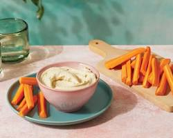

Palitos de zanahoria con hummus

Ingredientes:
- 250g de garbanzos cocidos
- 1 diente de ajo
- 15g de crema de ajónjoli
- 50ml de aceite de oliva virgen extra
- 15ml de zumo de limón
- 4g de sal
- 150g de zanahoria
¿Cómo prepararlo?!
- Escurrimos los garbanzos del jugo de cocción o de la conserva.
- Los introducimos en un vaso de batidora junto con el diente de ajo, la cucharadita de crema de ajónjoli (o una cucharadita de semillas de sésamo ligeramente tostadas)
- Una cucharada de zumo de limón y el aceite de oliva.
- Trituramos hasta conseguir una crema fina y brillante.
- Ponemos a punto de sal y servimos acompañado de unos bastoncitos de zanahoria cruda, pelados y cortados de igual manera haciendo la forma de bastón para que podamos untar en el humus de garbanzos.